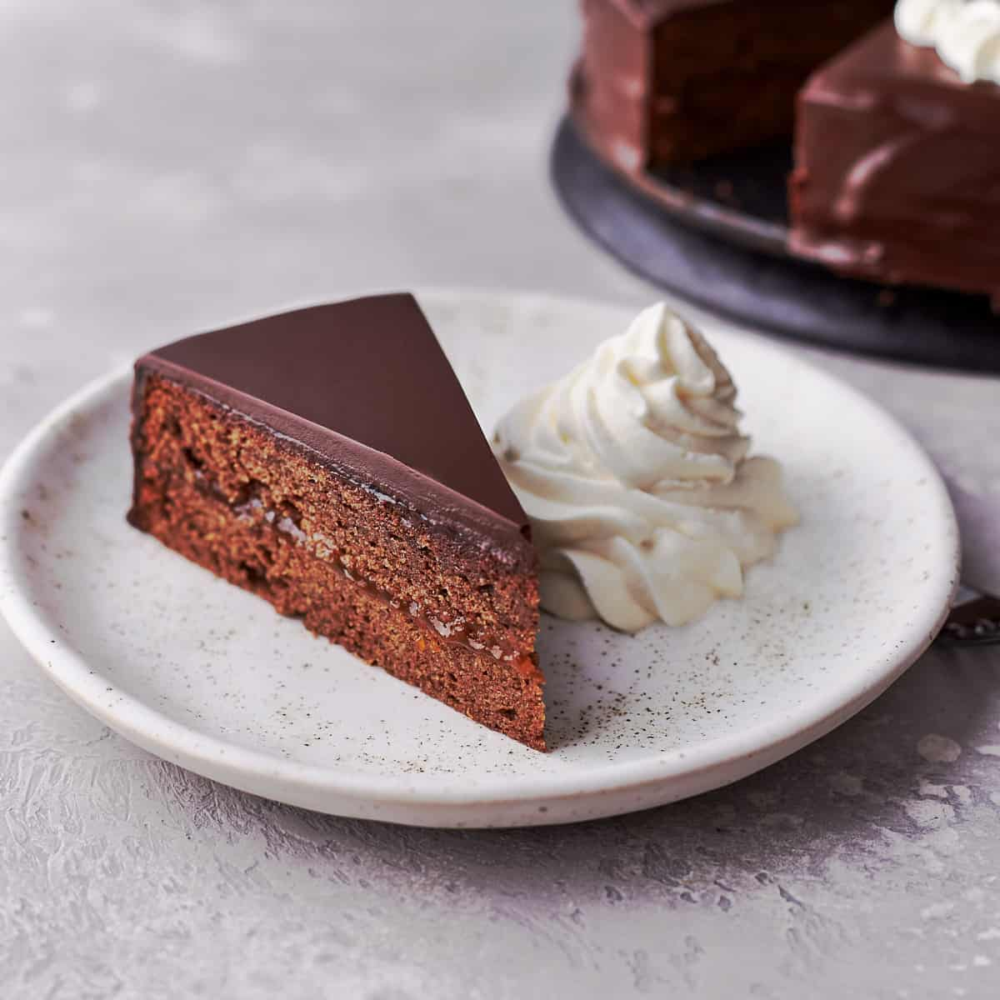

- 3/4 cup, unsalted butter
- 1 cup, superfine caster sugar
- 1 vanilla bean, or, 1 tsp, vanilla extract
- 7 large eggs, at room temperature
- 6 oz., semi-sweet chocolate bars
- 1/4 tsp., kosher salt
- 1 cup, cake flour
- 17.5 oz., apricot jam
- 1/4 cup, dark rum
- 8 oz., semi-sweet chocolate bars, finely chopped
- 1/2 cup, unsalted butter, diced into small cubes
- In a large mixing bowl using an electric mixer fitted with a whisk attachment, cream the butter and half of the sugar on medium-high speed until it is pale and fluffy for about 3 minutes.
- Add the vanilla and one egg yolk at a time and mix to combine after each egg yolk.
- Then add the melted chocolate and beat until smooth and creamy for about 2 minutes. Set aside.
- In another large mixing bowl, whisk the egg whites and salt with an electric mixer fitted with a whisk attachment on medium-high speed until foamy, about 1 minute.
- Then add the remaining sugar and mix on high speed until stiff peaks form, about 5 minutes.
- Carefully fold the whipped egg whites in 3 additions into the chocolate mixture. Fold only in one direction and with the same repeating movement. Don't overwork, or the cake will turn out flat. Once all the egg whites are folded into the batter, it should be light, fluffy, and silky.
- Then add the cake flour in 2 additions and fold just to incorporate, and no lumps remain. Fold again only in one direction and with the same repeating movement. Take care not to overwork the batter. Otherwise, the batter will deflate, and the cake won't rise as high as necessary. The batter should be light, fluffy, and silky.
- Transfer the batter to the prepared pan, spread evenly, and bake in a preheated oven at 350 degrees Farhenheit, for 50 - 60 minutes, until a toothpick inserted into the center comes out clean. Then let cool completely.
- Place a mesh strainer over a medium-sized heavy-bottomed saucepan or dutch oven, and press the apricot jam through the mesh strainer into the saucepan. Discard the fruit pulp. Add the rum and cook over medium heat for 2 minutes until hot, smooth, and combined. Then remove from the heat and set aside.
- Cut a thin layer off the top of your cake to create a flat surface. Then flip the cake upside down and cut it in half horizontally. It's best to place the cake on a cake turner at this point. Spread about ⅔ of the jam all over the bottom cake layer. Place the top cake layer on top and evenly spread the remaining jam all over the top and the sides of the cake. The cake should be completely covered in jam. Let dry uncovered at room temperature for 1 hour or until the jam is dry to the touch.
- To make the chocolate glaze, place a large heavy-bottomed saucepan or dutch oven over low heat and fill 2-inch (5cm) high with water. Place a large and heatproof glass bowl on top to completely close the saucepan and make sure that the bowl doesn't touch the water. Place the chocolate and butter in the bowl and slowly melt for about 5 minutes. Stir often with a rubber spatula and remove until the butter is completely melted and you see a few small pieces of chocolate in the glaze. Then remove the bowl from the heat and let rest for 5 minutes until completely melted and smooth. Stir occasionally.
- All at once and in a circulating movement, pour the chocolate glaze on top of the cake and quickly spread with a long frosting spatula to level and let the glaze run down the sides of the cake to cover the cake completely. Work quickly and with just a few movements. Please use a cake turner for easier handling. Let the glaze dry for 1 hour.
- Serve with whipped cream. Store in an airtight container at room temperature for up to 3 days.